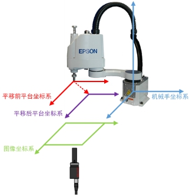
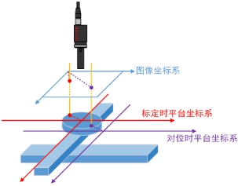
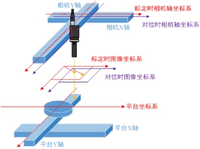

Công cụ sửa tọa độ nền tảng đa năng
Chức năng
Khi vị trí trục lúc đối vị khác với vị trí trục lúc hiệu chuẩn, quan hệ vị trí giữa hệ tọa độ ảnh và hệ tọa độ nền tảng sẽ thay đổi – gọi là “cập nhật gốc tọa độ nền tảng”. Lúc này, tọa độ nền tảng tính trực tiếp từ tọa độ ảnh + kết quả hiệu chuẩn sẽ không còn chính xác. Cần phải sửa quan hệ chuyển đổi theo lượng thay đổi vị trí trục để lấy được tọa độ nền tảng đúng. Công cụ sửa tọa độ nền tảng đa năng chính là công cụ thể dùng để sửa tọa độ nền tảng đầu vào theo lượng thay đổi vị trí trục và xuất ra tọa độ nền tảng đã được sửa.

Hình 1 – Dịch chuyển tịnh tiến hệ tọa độ nền tảng
Tham số
| Phân loại |
Tên tham số |
Mô tả tham số |
| Cửa sổ thuộc tính |
Loại sửa tọa độ |
- Hiệu chuẩn ảnh → nền tảng + ảnh → trục: dùng kết quả hiệu chuẩn ảnh→trục để chuyển lượng thay đổi vị trí trục thành khoảng cách ảnh, sau đó dùng kết quả hiệu chuẩn ảnh→nền tảng để chuyển khoảng cách ảnh thành khoảng cách nền tảng.
- Hiệu chuẩn trục → nền tảng: dùng trực tiếp kết quả hiệu chuẩn trục→nền tảng để chuyển lượng thay đổi vị trí trục thành lượng thay đổi tọa độ nền tảng.
|
| Thuộc tính trục X/Y |
Chọn trục X/Y là trục nền tảng hay trục camera:
→ Nếu là trục camera → kết quả cuối = tọa độ nền tảng đầu vào + lượng thay đổi khoảng cách nền tảng X/Y
→ Nếu là trục nền tảng → kết quả cuối = tọa độ nền tảng đầu vào – lượng thay đổi khoảng cách nền tảng X/Y

|
| Hình ảnh |
Không |
Không |
| Chuỗi dữ liệu |
Tọa độ nền tảng |
Tọa độ nền tảng cần sửa (đầu vào) |
| Vị trí trục lúc hiệu chuẩn |
Vị trí trục khi thực hiện hiệu chuẩn (có thể là trục camera hoặc trục nền tảng) |
| Vị trí trục lúc đối vị |
Vị trí trục khi thực hiện đối vị (có thể là trục camera hoặc trục nền tảng) |
| Hướng trục |
Chiều dương của từng trục nền tảng/camera |
| Kết quả hiệu chuẩn ảnh → nền tảng |
Chỉ dùng khi chọn loại sửa “Hiệu chuẩn ảnh → nền tảng + ảnh → trục” |
| Kết quả hiệu chuẩn ảnh → trục |
Chỉ dùng khi chọn loại sửa “Hiệu chuẩn ảnh → nền tảng + ảnh → trục” |
| Kết quả hiệu chuẩn trục → nền tảng |
Chỉ dùng khi chọn loại sửa “Hiệu chuẩn trục → nền tảng” |
| Giao diện nâng cao |
Không |
Không |
Đầu ra
| Phân loại |
Tên tham số |
Mô tả tham số |
| Cửa sổ giám sát |
Tọa độ nền tảng đã sửa |
Kết quả tọa độ nền tảng sau khi sửa |
| Kết quả thực thi |
Trạng thái thực thi của công cụ |
| Thời gian thực thi |
Thời gian chạy công cụ |
| Hình ảnh |
Không |
Không |
| Chuỗi dữ liệu |
Tọa độ nền tảng đã sửa |
Kết quả tọa độ nền tảng sau khi sửa, dùng cho các công cụ phía sau (giống giá trị ở cửa sổ giám sát) |
Giải thích chi tiết
Thuộc tính trục X/Y
Khi vị trí trục thay đổi giữa lúc hiệu chuẩn và lúc đối vị, sẽ ảnh hưởng đến tọa độ nền tảng → cần dùng công cụ này để sửa. Cách tính sửa khác nhau tùy thuộc thuộc tính trục:
Khi trục X/Y là trục nền tảng (Hình 2):
Sự thay đổi vị trí trục nền tảng làm hệ tọa độ nền tảng dịch chuyển → cần trừ đi lượng thay đổi vị trí trục.

Hình 2 – Thay đổi vị trí trục nền tảng
Khi trục X/Y là trục camera (Hình 3):
Sự thay đổi vị trí camera làm hệ tọa độ ảnh dịch chuyển → cần cộng thêm lượng thay đổi vị trí trục vào tọa độ nền tảng.

Hình 3 – Thay đổi vị trí trục camera
Lưu ý
- Khi chọn loại sửa “Hiệu chuẩn ảnh → nền tảng + ảnh → trục” và dùng cùng một kết quả hiệu chuẩn cho cả hai, thì kết quả tọa độ nền tảng đã sửa sẽ giống hệt với trường hợp chọn loại “Hiệu chuẩn trục → nền tảng” và dùng cùng kết quả hiệu chuẩn đó.
示例工程
参见“\Samples\标准标定+基准四点两线对位.gvp”